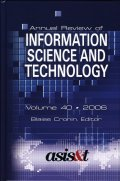

|  |
| BOOK AND SOFTWARE REVIEWS | ||||
Cronin, Blaise, (Ed.). Annual review of information science and technology. Volume 40. 2006. Medford, NJ: Information Today, Inc. on behalf of ASIS&T, 2006. xxv, 596, [2] pp. ISBN 1-57387-242-3 $99.95
Forty years is something of a landmark in the life of any human activity, although it is rarely celebrated with the enthusiasm of the half-century, and for an annual review series to persist for this length of time through three or four publishers and editors is quite an achievement. ASIS&T was still called the American Documentation Institute when the series began, and the information technology revolution was a faint glimmer on the horizon.
Over these past forty years, ARIST, as it is commonly known, has covered, often more than once, the major subfields of information science and its papers are among the most frequently cited, with ARIST leading the Impact Factor rankings in its ISI category. The importance of this enterprise to the field, therefore, cannot be doubted and the series has been blessed by having editors who have devoted themselves to ensuring that its quality standards are not compromised.
Last year, our reviewer drew attention to a couple of shortcomings (as he saw it) of that volume: that some of the chapters were more in the nature of general journal papers, than 'review' chapters and the obscurity of at least one (even acknowledging that some subjects are intrinsically difficult). Consequently, I was very interested to see what had been done with the 2006 volume.
This year, we have four sections: first, Information and society, with three chapters on the economics of information, 'geographies of the Internet', and open access (sadly, failing to mention Information Research); next, Technologies and systems, with another three chapters on TREC, 'semantic relations in information science', and, continuing one of the themes of Volume 39, 'intelligence and security informatics'; the third section is headed Information needs and uses, but contains a somewhat disparate set of chapters dealing with information behaviour (a timely addition to his recent text by Donald Case), collaborative information seeking and retrieval, 'information failures in health care' and 'workplace studies and technological change'; and, finally, section four, Theoretical perspectives, has another three chapters on 'information history', social epistemology, and formal concept analysis.
The thirteen chapters have a total of twenty-one authors, from four countries: fourteen from the USA, three from the UK, two from Canada and two from Singapore. With the incorporation of so many Central and Eastern European countries into the European Union, one might hope for some representation in future from that region. Information science in the former Soviet Union and its satellites has been something of a closed book, but Professor Macevičiūtė's paper in this issue of this journal suggests that similar reviews of 'Eastern' developments in other fields could well find a place in future issues of ARIST.
What of the contributions themselves? I do not think that the criticisms made by last year's reviewer can be repeated on this occasion, all of the contributions seem to be true 'review' pieces and all are readily intelligible to the educated information scientist. Reviewing the cornucopia of ideas is, of course, impossible: one has to be selective (unless possessed of a multiple intellectual personality!) and my approach has been to select those chapters that deal with topics in which I have an interest and then to select another about which I am uninformed but curious.
On this basis, I turned first to Chapter 1, by Sandra Braman, on the economics of information, a topic which I still teach from time to time. There is always a problem of definition in this area, since the boundaries between 'information', 'information systems', 'information technology' and 'communications technology' are fluid and constantly changing. This problem is addressed immediately on the first page of the chapter and the solution adopted is to use a 'fourfold typology of definitions':
...information as a resource, as a commodity, as perception of pattern, and as a constitutive force in society...
in addition, micro-economics and macro-economics are linked in the analysis of the literature.
Overall, this approach succeeds admirably and I can recommend this chapter as an excellent starting point for either the PhD student looking for a starting point in the field, or the teacher assembling material for a course on the subject.
Not surprisingly, Chapter 3, 'Open access' by M. Carl Drott, is my next choice, since this journal is an example of the success of the open access principle. This is a very balanced account of the subject, drawing upon a wide variety of viewpoints and discussion most of the options available to provide open access to scholarly research. The focus is mainly on open access journals, however, and there is an attempt to make sense of the complex economic issues. Not all of the models for open access journals are discussed in economic terms, however: partly because the data do not exist. For example, I have no economic data on the publication of Information Research, since my time, and that of the Associate Editors, is given freely and we keep no time records on our involvement. And, yet, this 'economics free' model of collaborative publishing appears to work. Perhaps the secret is to ignore the economics and simply get on with doing it!
My third choice is Donald Case's Chapter 7 on information behaviour, the latest, as the author notes, in a long line of chapters on the same subject (although usually under a different title) going back to Menzel's chapter in the first volume in 1966.. As I noted above, this serves as a supplement to his text, 'Looking for information', published in 2002. Case adopts a fourfold classification of the literature in his review: information seekers by occupation, by role, and by demographic group, and theories, models and methods used in information behaviour research. This approach provides a useful framework, since it does closely reflect the nature of research in the field. Case's book has rapidly achieved the status of a standard work in the field and this chapter provides a useful addition—we can expect both to be widely cited in the future.
Finally, I chose Chapter 11, 'Information history' by Alistair Black, simply out of a general interest in the historical perspective, which is often so lacking in present-day work—I am continually annoyed by papers that appear to assume that the world before the Internet did not exist. Some years ago, teaching in North America while I was on study leave from Sheffield, I put McDiarmid's The library survey, dating from 1940 on my reading list, to be posed the question, 'Is something that old really worth reading?'!
Fortunately, Alistair Black understands the complexities and interest of the historical approach, and his review (a first for ARIST) covers a very wide range of topics and sources. His conclusion that:
...the historical component of education for information work needs to be strengthened, especially in the light of the fact that historical subjects have virtually disappeared from library and information science curricula, crowded out by the emergence of a virulent vocationalism, which prioritizes knowledge and skills that can be shown to be directly and immediately pertinent for the workplace.
ought to be of concern to all scholars in the information arena. A subject without a history is unlikely to survive to have one!
My choice of chapter in the category of curiosity is 'Semantic relations in information science' by Knoo and Na, which is a very thorough review, even extending back to Jason Farradane's attempt to define a set of 'semantic operators' for information retrieval in the 1950s. Indeed, the 50s and 60s were a time of considerable interest in the semantic problem in information retrieval: in addition to Farradane, J-C Gardin in France was exploring the problem in a system called SYNTOL, and I vaguely recall work going on at Case Western Reserve University in Chicago. For anyone wishing to catch up with developments since then, this chapter is essential reading. I am personally dubious as to whether the Semantic Web will ever be a reality, outside some very narrowly defined fields of enterprise, but if it ever does come into being, semantic relationships among elements will be at its heart.
There is, of course, much more to read in this volume and I think there will be considerable demand for it from teachers and researchers in the field. A must for any university library.
Professor Tom Wilson
Editor-in-Chief
April 2006
How to cite this review
Wilson, T.D. (2006). Review of: Annual review of information science and technology. Volume 40. 2006.. Medford, NJ: Information Today, Inc., 2006 Information Research, xx(x), review no. R221 [Available at: http://informationr.net/ir/reviews/revs221.html]